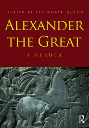

I am daily wakeup at 5 am and i read history books in daily and i wrote diary at night time i am positive person and self motivated one. each and evry thing i takes challanging.
Alexander was a visionary. His ability to dream, plan and strategize on a large scale allowed him too many battles, even when he was outnumbered.In that book will helps to motivates for every persons life and he plays tricks to the enemy. that book gives the ideals, toughts, strengths, and different skills.
